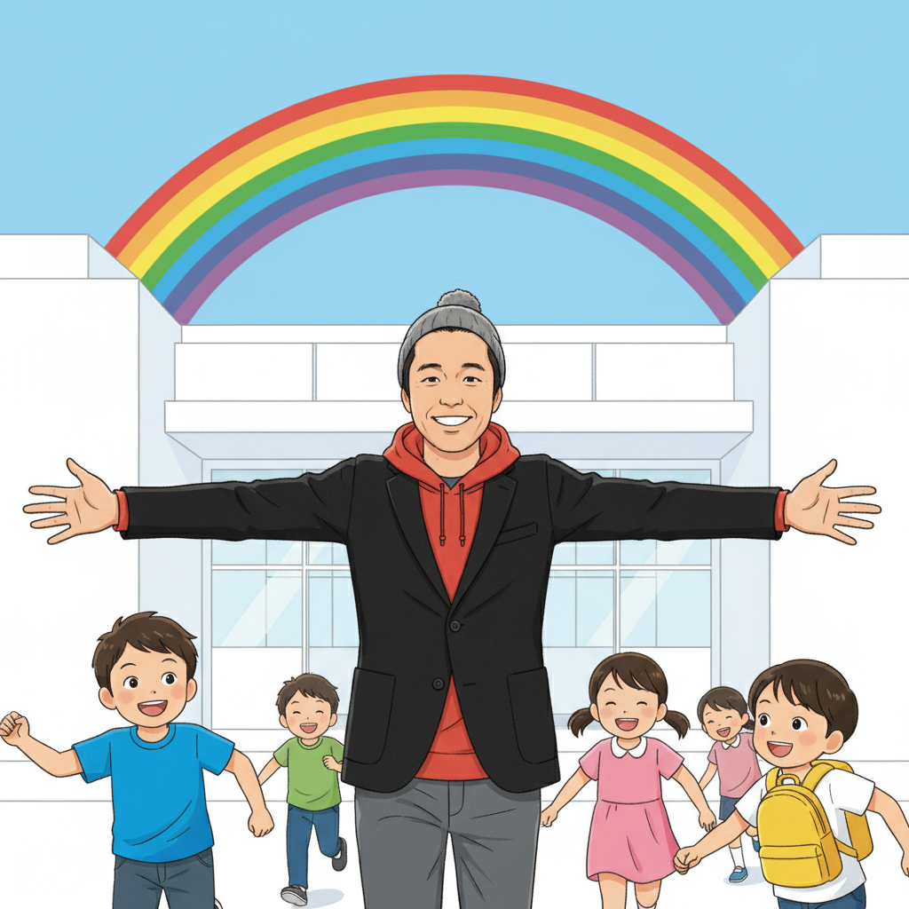

「苦手」を「得意」に！AI・プログラミングとの出会い（高崎先生）
こんにちは！if塾塾頭の高崎です。多くの人が苦手意識を持つAIやプログラミング。でも、発達障害を持つ人の中には、これらの分野で驚くほどの才能を発揮する人がいるんです。なぜでしょう？
それは、私たちが持つ特性が、時に大きな強みになるから。例えば、一つのことに没頭する集中力。これはプログラミングにおいて非常に重要な能力です。また、論理的な思考力やパターン認識能力も、AIを理解し活用する上で役立ちます。
if塾では、それぞれの個性を尊重し、AIやICTを活用することで、子どもたちが自分らしい成長を遂げられるようサポートしています。発達障害 プログラミングを通じて、成功体験を積み重ね、自信を持って未来を切り拓いてほしい。それが私たちの願いです。
ゲーム好きが高じてCTOに！？集中力を活かした井上陽斗の物語（井上CTO）
if塾のCTO、井上陽斗です。僕は小さい頃からゲームが大好きで、特に一つのゲームに没頭してしまうタイプでした。周りからは「ゲームばかりして」と言われることもありましたが、高崎先生は僕の集中力に目を付けてくれたんです。
先生との出会いがきっかけで、ゲームへの情熱をプログラミングスキルに昇華させることに成功しました。最初は簡単なゲームを作ることから始め、徐々に複雑なシステム開発にも挑戦。今では、if塾のICT教育を支える重要な役割を担っています。
発達障害 AI分野でも、集中力は大きな武器になります。AIの学習には、大量のデータを分析し、パターンを見つけ出す作業が不可欠。この作業に没頭できる集中力は、AIエンジニアとして活躍するための大きなアドバンテージになります。eスポーツ 発達障害という分野も、集中力や戦略思考を活かせる可能性を秘めていると思います。
山﨑塾長が語る、特別支援学級から国立大学へ！経験を力に変える（山﨑塾長）
if塾塾長の山﨑です。僕はADHDとASDの診断を受け、中学時代は特別支援学級に通っていました。周りの友達と同じようにできないことが多く、自信をなくしていた時期もありました。
でも、高校で高崎先生に出会い、自分の特性を理解し、それを活かす方法を教えてもらいました。先生のサポートのおかげで、得意なことを見つけ、それを伸ばすことができたんです。結果、国立大学に進学することができました。
僕の経験から言えることは、発達障害は決して「障害」ではなく、むしろ「才能」になりうるということです。大切なのは、自分の特性を理解し、それを活かせる環境を見つけること。if塾では、私自身も経験者として、子どもたち一人ひとりに寄り添い、自分らしい成長をサポートしていきたいと思っています。
一歩踏み出す勇気を！if塾で未来を拓こう（高崎先生）

if塾では、AI、ICT、プログラミングを通じて、子どもたちの可能性を最大限に引き出すことを目指しています。私たちは、一人ひとりの個性を尊重し、成功体験を積み重ねることで、子どもたちが自信を持って未来を切り拓けるようサポートします。
もしあなたが、自分に自信が持てなかったり、何をやってもうまくいかないと感じているなら、ぜひif塾に遊びに来てください。私たちと一緒に、あなたの才能を見つけ、未来を拓きましょう！
発達障害 プログラミングは、新しい可能性の扉を開く鍵となるかもしれません。あなたの「好き」を「得意」に変え、自分らしい成長を遂げてください。if塾は、いつでもあなたを応援しています。